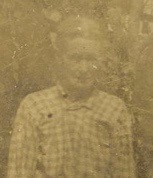

Nancy T. Jewell
1854–1918

Life Events
Born: May 4, 1854 — Clinch, Georgia, United States
Died: October 30, 1918 — Clinch, Georgia, United States
Family
Spouse: Thomas Levi Herrin
Children
Military Service
No military service information has been added.
Biography
Biography information has not yet been added.
Photos
Family photographs will be added here.
Sources
No sources have been added yet.